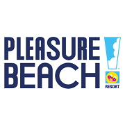

Blackpool Pleasure Beach, located in Blackpool, England, has a rich history that dates back to its establishment in 1896. Originally conceived as a small amusement park by its founder, James Barlow, the Pleasure Beach began with modest attractions and a vision to create a family-friendly entertainment destination. The parks early success was driven by its picturesque location along the Blackpool seafront and its appeal to holidaymakers seeking recreational activities. As the park grew in popularity, it attracted the attention of other entrepreneurs and investors, setting the stage for its future expansion. Throughout the early 20th century, Blackpool Pleasure Beach underwent significant development and expansion. The introduction of new rides and attractions, including early roller coasters and thrill rides, helped establish the park as a leading amusement destination. In 1928, the park introduced the Big Dipper, one of its most iconic wooden roller coasters, which quickly became a symbol of the Pleasure Beachs commitment to offering exhilarating experiences. The 1930s and 1940s saw further growth with the addition of notable rides such as the Grand National and the iconic Tower attractions, which solidified the parks reputation for innovation and excitement. The latter half of the 20th century marked a period of modernization and significant investment in new attractions. Blackpool Pleasure Beach continued to evolve with the introduction of cutting-edge rides and technologies. In 1994, the park unveiled the revolutionary Valhalla, an indoor water ride known for its elaborate theming and advanced effects, which became one of the most acclaimed attractions in Europe. The 2000s saw the addition of several high-profile rides, including the Pepsi Max Big One (now known as The Big One), which, when opened in 1994, was the tallest and fastest roller coaster in the world, highlighting the parks dedication to remaining at the forefront of the amusement industry. In recent years, Blackpool Pleasure Beach has continued to build on its storied legacy by investing in new attractions and updating existing ones. The introduction of new rides such as ICON, the parks first double-launch roller coaster, has further cemented its status as a premier destination for thrill-seekers. The parks ongoing commitment to innovation and quality has ensured that it remains a major player in the amusement industry. Today, Blackpool Pleasure Beach is celebrated not only for its historic attractions but also for its ability to blend traditional charm with modern thrills, making it a beloved destination for visitors from around the world. More recently the park has seen a loss in vistors as Blackpool has not introduced any new rides since 2018. Other theme parks have been gaining new attractions or updating there old ones over the past 2 years. This means that BPB has lost visitors due to the fact tht there is no new events or rides for them. However, it is speculaited amungst most of the theme park community that there will be a new ride soon as the grand prix ride closed down in 2024. Blackpool Pleasure Beach has a rich history of growth and innovation, evolving from a small amusement park into one of the UKs most renowned entertainment destinations. Its legacy is defined by a continuous commitment to providing thrilling experiences and memorable attractions, ensuring its place as a landmark in the amusement park industry.
| Name | Track Length | Run Time | Max Height | Max Speed | Riders Per Hour |
|---|---|---|---|---|---|
| The Big One | 1,669 m | 2 minutes 30 seconds | 65 m | 137 kph | 1,200 rph |
| Icon | 1,014 m | 2 minute 15 seconds | 22.5 m | 129 kph | 1,000 rph |
| Revolution | 832 m | 1 minutes 45 seconds | 22 m | 80 kph | 900 rph |
| Infusion | 550 m | 1 minute 30 seconds | 23 m | 89 kph | 720 rph |
| Avalanche | 400 m | 1 minutes 30 seconds | 13 m | 64 kph | 700 rph |
| Big Dipper | 1,005 m | 2 minute 30 seconds | 23 m | 80 kph | 1,000 rph |
| Grand National | 1,464 m | 2 minute 15 seconds | 22 m | 50 kph | 1,000 rph |
| Valhalla | 700 m | 5 minute 00 seconds | 14 m | 48 kph | 1,200 rph |
The Big One, originally known as the Pepsi Max Big One, was conceived in the early 1990s as part of Blackpool Pleasure Beachs strategy to expand its range of attractions and solidify its status as a premier amusement park. The ride was designed by the renowned roller coaster manufacturer Intamin and was to be the tallest and fastest roller coaster in the world upon its completion. The project was driven by the parks ambition to create a landmark attraction that would draw visitors from across the UK and beyond. The construction of The Big One was a significant undertaking, involving extensive engineering and planning to ensure it met the ambitious specifications of height and speed. The Big One officially opened to the public on May 28, 1994. At the time of its debut, it was the tallest and fastest roller coaster in the world. The rides massive scale and high-speed elements generated significant excitement and media attention. Its opening marked a major milestone for Blackpool Pleasure Beach, enhancing its reputation as a leading amusement park and attracting a surge of visitors eager to experience the record-breaking ride. The Big One features a dramatic first drop, where riders experience a near-vertical plunge that delivers an intense airtime sensation. The rides layout includes a series of airtime hills and high-speed turns, providing a thrilling and exhilarating experience. Despite its impressive height and speed, The Big One does not include inversions, focusing instead on delivering a high-adrenaline experience through its sheer scale and speed. Since its opening, The Big One has remained a central attraction at Blackpool Pleasure Beach, continuing to draw thrill-seekers and roller coaster enthusiasts. Although it has been surpassed in height and speed by other roller coasters around the world, The Big Ones status as a pioneering ride in the amusement industry has solidified its place in roller coaster history. The rides iconic status and enduring appeal are reflected in its continued popularity and its role as a landmark attraction at the park. In recent years, The Big One has undergone updates and refurbishments to ensure it continues to provide a safe and thrilling experience for visitors. The ride remains a key feature of Blackpool Pleasure Beach, representing the parks commitment to offering high-quality and exciting attractions. The Big Ones legacy as a groundbreaking ride and its ongoing popularity highlight its significance in the history of amusement parks and roller coasters. The Big One is a landmark roller coaster at Blackpool Pleasure Beach, known for its record-breaking height and speed. Its development, opening, and continued success underscore its importance in the history of amusement parks and its role in shaping the parks reputation as a premier destination for thrill rides.
ICON was introduced as Blackpool Pleasure Beachs first double-launch roller coaster, marking a significant step in the parks evolution and commitment to offering innovative and thrilling attractions. Announced in 2017, ICON was designed by the acclaimed roller coaster manufacturer Mack Rides. The decision to build ICON reflected the parks desire to bring a modern, high-tech ride experience to its lineup, showcasing cutting-edge coaster technology and enhancing its appeal to thrill-seekers. The rides development was part of Blackpool Pleasure Beachs strategy to diversify its offerings and maintain its status as a leading amusement destination. The construction of ICON began in early 2017, with extensive groundwork and building work required to accommodate the new coaster. The ride officially opened to the public on May 25, 2018. At the time of its launch, ICON was celebrated for its advanced features, including its double-launch system, which propels riders to high speeds at two different points during the ride. The coasters sleek design and modern technology made it a standout attraction, both for its innovative elements and its high-energy experience. ICON features a dynamic layout with a series of high-speed elements and inversions, including a corkscrew and a heartline roll. The ride includes two launches, which provide a powerful and exhilarating start and mid-point acceleration, propelling riders to speeds of up to 80 miles per hour (129 km/h). The coasters design emphasizes smooth transitions and exciting interactions with its surroundings, including the parks scenic areas. ICONs innovative features and engaging ride experience have made it a popular attraction, appealing to both seasoned roller coaster enthusiasts and new riders. Since its opening, ICON has become a key attraction at Blackpool Pleasure Beach, contributing to the parks reputation for offering cutting-edge and thrilling experiences. The rides modern design and technology have helped position the park as a destination for innovative and exciting attractions. ICONs introduction marked a new era for Blackpool Pleasure Beach, highlighting its commitment to staying at the forefront of the amusement industry and providing memorable experiences for visitors. ICON continues to be a central feature of Blackpool Pleasure Beach, with ongoing maintenance and updates ensuring that it remains in top condition. The rides success has been reflected in its popularity among visitors and its role in enhancing the parks overall appeal. ICONs combination of advanced technology, high-speed thrills, and engaging elements underscores its importance as a landmark attraction at Blackpool Pleasure Beach. ICON is a significant and modern roller coaster at Blackpool Pleasure Beach, known for its double-launch system and high-speed thrills. Its development, opening, and continued success highlight its role in advancing the parks offerings and maintaining its position as a premier destination for innovative and exhilarating attractions.
Revolution, which opened on April 4, 1979, was a groundbreaking addition to Blackpool Pleasure Beach, designed to push the boundaries of amusement park attractions in the UK. Manufactured by Arrow Dynamics, Revolution was the first roller coaster in the UK to feature a vertical loop, a significant innovation at the time. The introduction of this inversion element was part of the parks strategy to offer more thrilling and modern rides, enhancing its reputation as a leader in the amusement industry. The rides design was aimed at providing a unique and exciting experience that would attract both thrill-seekers and roller coaster enthusiasts. The construction of Revolution involved considerable engineering to accommodate the vertical loop and the associated forces. When it opened, Revolution was celebrated for its pioneering loop, which was a novel feature for roller coasters in the UK and added a new level of excitement to the parks offerings. The rides debut marked a significant moment in Blackpool Pleasure Beachs history, showcasing the parks commitment to innovation and its ability to offer cutting-edge attractions. Revolution is a steel roller coaster with a classic design that includes a vertical loop, a notable feature that delivers an intense inversion experience. The rides layout consists of a series of high-speed elements, sharp turns, and the distinctive vertical loop that provides a thrilling sensation of weightlessness. While the coaster does not feature additional inversions or extreme elements, its combination of speed and the vertical loop creates a memorable and exciting ride experience. Revolutions design focuses on delivering a high-adrenaline experience with smooth transitions and engaging elements. Revolution holds a special place in the history of Blackpool Pleasure Beach as one of the parks landmark attractions. Its introduction of the vertical loop was a major advancement in the UK amusement scene, setting a new standard for roller coasters and influencing future designs. The rides success helped cement Blackpool Pleasure Beachs reputation as an innovative amusement park and contributed to its ongoing appeal to thrill-seekers and visitors. Revolutions legacy is defined by its pioneering role in introducing inversion elements to the UK market and its continued popularity as a classic roller coaster. Revolution remains a key attraction at Blackpool Pleasure Beach, continuing to draw visitors with its historic significance and thrilling ride experience. The ride has undergone routine maintenance and updates to ensure it remains in excellent condition and continues to provide an exciting experience for riders. Revolutions status as a pioneering roller coaster and its ongoing appeal underscore its importance in the parks history and its role in shaping the landscape of amusement rides in the UK. Revolution is a historic roller coaster at Blackpool Pleasure Beach, known for its pioneering vertical loop and classic design. Its development, opening, and continued success highlight its significance in the history of roller coasters and its enduring role as a key attraction at the park.
Infusion was introduced to Blackpool Pleasure Beach as part of a major redevelopment project to enhance the park's lineup of thrill rides. Opened on May 26, 2007, Infusion was designed by the German manufacturer Mondial and represented a significant investment in modern coaster technology. The ride was notable for being one of the first suspended looping coasters in the UK, incorporating several inversions and high-speed elements that marked a departure from the parks previous ride offerings. Infusion was part of a broader trend towards more intense and technologically advanced roller coasters in the early 2000s, aimed at appealing to a new generation of thrill-seekers. The construction of Infusion involved the installation of a steel track that weaves through the park's landscape, including over and around a large lake. This design not only added a visually striking element to the ride but also integrated it with the natural features of the park. The coasters opening was met with enthusiasm from both the media and visitors, who were eager to experience its high-speed inversions and unique layout. Infusions debut represented a significant step forward for Blackpool Pleasure Beach, enhancing its reputation as a destination for cutting-edge thrill rides. Infusion features a series of intense elements, including four inversions: two corkscrews, a heartline roll, and a vertical loop. The rides layout is designed to deliver a high-energy experience with rapid transitions, multiple airtime moments, and a smooth ride profile. The coasters suspended design allows riders to experience a unique sensation of weightlessness and dynamic movement through the inversions and high-speed maneuvers. Infusions interaction with the surrounding lake and park environment adds to its visual appeal and enhances the overall ride experience. Infusion has become an integral part of Blackpool Pleasure Beachs attraction lineup, offering a modern and exhilarating ride experience that complements the parks historic and classic rides. Its introduction marked a significant update to the parks offerings, bringing advanced coaster technology and high-intensity thrills to the forefront. Infusions impact is reflected in its popularity among visitors and its role in establishing Blackpool Pleasure Beach as a leading destination for contemporary amusement experiences. Infusion continues to be a key attraction at Blackpool Pleasure Beach, with regular maintenance and updates ensuring that it remains in excellent condition. The rides success and ongoing popularity highlight its role in the parks evolution and its contribution to its reputation for thrilling and innovative rides. Infusions combination of modern design and intense ride elements ensures its place as a standout attraction at Blackpool Pleasure Beach. Infusion is a notable roller coaster at Blackpool Pleasure Beach, known for its high-speed elements and multiple inversions. Its development, opening, and continued success underscore its importance as a modern thrill ride and a key feature of the parks diverse attraction lineup.
Avalanche was introduced to Blackpool Pleasure Beach as a distinctive addition to the parks ride lineup, featuring a unique bobsled-style coaster design. Opened on May 24, 1988, Avalanche was created by the German manufacturer Mack Rides, known for its innovative approach to roller coaster design. The concept behind Avalanche was to offer a thrilling ride experience with a design that deviated from traditional roller coasters, focusing instead on a gravity-powered bobsled layout. The ride aimed to provide a different kind of thrill, emphasizing rapid directional changes and smooth, high-speed motion. The construction of Avalanche involved the installation of a distinctive steel track that mimics the motion of a bobsled running down a mountain. The rides layout was carefully designed to create a thrilling experience with banked turns and drops that simulate the sensation of bobsledding. When Avalanche opened to the public on May 24, 1988, it was praised for its unique ride experience and innovative design. The ride quickly became a popular attraction at Blackpool Pleasure Beach, contributing to the parks reputation for offering diverse and exciting rides. Avalanche features a series of fast-paced, gravity-driven elements that provide a unique bobsled experience. Unlike traditional roller coasters, Avalanche does not rely on a conventional track layout but instead uses a series of banked turns and drops that simulate the motion of a bobsled. The rides design emphasizes smooth transitions and high-speed thrills, creating an exhilarating experience without the use of inversions. Avalanches interaction with its environment, including its proximity to the parks lake, adds to its visual appeal and overall ride experience. Avalanche has become a cherished part of Blackpool Pleasure Beachs ride lineup, celebrated for its innovative design and thrilling ride experience. Its introduction marked a departure from traditional roller coaster designs, offering a fresh and exciting option for visitors. Avalanches success contributed to the parks ongoing reputation as a destination for unique and engaging attractions. The rides distinctive bobsled-style design and high-speed elements continue to make it a popular choice for thrill-seekers. Avalanche remains a key attraction at Blackpool Pleasure Beach, with regular maintenance ensuring it continues to operate smoothly and provide an exciting ride experience. The rides enduring popularity highlights its importance within the parks collection of attractions and its role in showcasing the parks commitment to offering diverse and innovative thrill rides. Avalanches combination of unique design and high-speed thrills ensures its place as a standout attraction at Blackpool Pleasure Beach. Avalanche is a distinctive and thrilling roller coaster at Blackpool Pleasure Beach, known for its bobsled-style design and gravity-driven ride experience. Its development, opening, and continued success underscore its significance as a unique addition to the parks lineup and its ongoing appeal to visitors seeking an exhilarating ride.
The Big Dipper, a historic wooden roller coaster, was conceptualized as part of Blackpool Pleasure Beach's ongoing effort to expand and enhance its attraction lineup. Designed by John Miller, a pioneer in wooden roller coaster design, the Big Dipper was intended to offer a classic thrill ride experience with a traditional wooden structure. The ride was introduced as a major new attraction in the 1920s, reflecting the eras enthusiasm for innovative and thrilling amusement park rides. It was part of the park's broader strategy to provide diverse entertainment options and to solidify its status as a leading amusement destination. The construction of the Big Dipper began in the late 1920s, and the ride officially opened to the public on July 23, 1928. At the time of its debut, the Big Dipper was celebrated for its impressive scale and design, featuring a series of airtime hills, sharp drops, and banked turns that provided a thrilling and exhilarating experience. The ride's wooden structure and classic design quickly made it a standout attraction, appealing to both thrill-seekers and families. The Big Dipper's opening marked a significant milestone in the history of Blackpool Pleasure Beach, contributing to the parks growing reputation as a destination for high-quality amusement rides. The Big Dipper is characterized by its classic wooden coaster design, featuring a series of airtime hills and sharp drops that deliver a thrilling ride experience. The coasters layout includes a notable drop and high-speed elements that create an exciting and nostalgic experience for riders. Despite its lack of modern inversions or extreme elements, the Big Dippers smooth, high-speed ride and traditional wooden construction contribute to its enduring appeal. The ride is known for its smooth transitions and the distinctive charm of wooden coaster design. The Big Dipper has played a significant role in Blackpool Pleasure Beachs history, becoming one of the parks most iconic and beloved attractions. Its introduction marked a key moment in the development of the parks ride offerings, and its continued popularity reflects its status as a classic and enduring thrill ride. The Big Dippers legacy is highlighted by its historical significance and its role in shaping the parks reputation as a premier destination for amusement rides. Its continued operation and popularity underscore its importance in the parks history and its appeal to multiple generations of visitors. The Big Dipper remains a central attraction at Blackpool Pleasure Beach, with ongoing maintenance and refurbishment ensuring that it continues to provide a safe and exciting ride experience. The rides status as a historic and iconic roller coaster contributes to its continued popularity and its role in the parks attraction lineup. The Big Dippers combination of classic design and thrilling elements ensures its place as a standout feature of Blackpool Pleasure Beach. The Big Dipper is a historic wooden roller coaster at Blackpool Pleasure Beach, known for its classic design and thrilling ride experience. Its development, opening, and continued success highlight its significance as a landmark attraction and its enduring appeal to visitors seeking a nostalgic and exciting amusement ride.
Grand National, a prominent wooden racing roller coaster, was conceived as a major attraction to enhance Blackpool Pleasure Beachs diverse collection of thrill rides. Designed by Charles Paige and built by Charles Paige Ltd., the Grand National was a significant project aimed at offering a unique racing coaster experience. Opened on July 4, 1935, the ride was designed to capture the excitement of competitive racing by featuring two parallel tracks that race against each other, creating an engaging and thrilling experience for riders. The coaster was part of a broader effort by Blackpool Pleasure Beach to innovate and expand its offerings, appealing to both thrill-seekers and families. The construction of Grand National involved building two separate wooden tracks, each with its own set of airtime hills, sharp turns, and drops. The ride's design emphasized the competitive racing element, with the two trains racing side by side to add an extra layer of excitement. When it opened to the public on July 4, 1935, Grand National was celebrated for its innovative racing concept and its high-speed, high-energy ride experience. The ride quickly became a popular attraction, known for its thrilling head-to-head racing and its distinctive wooden construction. Grand National features a dual-track layout with two parallel wooden tracks that race against each other, creating a unique and exhilarating racing experience. The ride includes a series of airtime hills, sharp drops, and banked turns that provide a high-energy experience with moments of weightlessness and intense speed. The competitive aspect of the ride, with the two trains racing side by side, adds an exciting element of unpredictability and interaction. Despite the absence of inversions, Grand Nationals design and racing concept deliver a thrilling and memorable experience for riders. Grand National holds a special place in the history of Blackpool Pleasure Beach, representing a significant innovation in the world of wooden roller coasters. Its introduction of the racing concept set a new standard for thrill rides and contributed to the parks reputation for offering unique and exciting attractions. The rides enduring popularity reflects its status as a classic and iconic feature of Blackpool Pleasure Beach. Grand Nationals legacy is marked by its role in advancing roller coaster design and its continued appeal to visitors seeking a thrilling and competitive ride experience. Grand National continues to be a key attraction at Blackpool Pleasure Beach, with regular maintenance and updates ensuring that it remains in excellent condition. The rides ongoing popularity highlights its importance within the parks collection of attractions and its role in showcasing the parks commitment to offering diverse and exciting experiences. Grand Nationals combination of classic wooden design and innovative racing elements ensures its place as a standout feature of Blackpool Pleasure Beach. Grand National is a historic wooden racing roller coaster at Blackpool Pleasure Beach, known for its dual-track design and thrilling competitive experience. Its development, opening, and continued success underscore its significance as a pioneering attraction and its enduring appeal to visitors seeking an exciting and unique ride.
Valhalla was conceived as a groundbreaking addition to Blackpool Pleasure Beach, designed to push the boundaries of indoor water rides. Announced in 1999 and opening to the public on March 14, 2001, the ride was developed by the German manufacturer Intamin, known for its expertise in creating immersive and thrilling attractions. Valhalla was conceived to offer a comprehensive sensory experience combining a dark ride with elaborate water features and special effects, drawing inspiration from Norse mythology and aiming to provide an unparalleled adventure within the park. The development of Valhalla was part of Blackpool Pleasure Beachs strategy to diversify its ride offerings and introduce a new level of thematic immersion. The construction of Valhalla involved extensive planning and the installation of a highly detailed and complex set of thematic elements. The rides design included an indoor water track that winds through a series of intricately themed scenes featuring fire, water, and wind effects. The building process was ambitious, requiring careful coordination to integrate the various effects and ensure a seamless ride experience. When Valhalla opened on March 14, 2001, it was celebrated for its innovative use of special effects and its immersive theming. The ride quickly gained acclaim for its dramatic and engaging experience, setting a new standard for indoor water attractions. Valhalla offers a multi-sensory experience that combines storytelling with thrilling ride elements. Riders embark on a journey through various scenes inspired by Norse mythology, including dramatic moments such as a raging storm, a fiery dragon, and a Viking ship battle. The ride features several high-energy moments, including a significant drop and intense splash effects, enhanced by the use of fire, water, and wind to create a dynamic and immersive environment. Valhallas combination of detailed theming and advanced special effects delivers a unique and memorable ride experience, making it a standout attraction at Blackpool Pleasure Beach. Valhalla has become one of the most iconic and celebrated attractions at Blackpool Pleasure Beach, known for its innovative approach to indoor water rides and its elaborate thematic design. The rides introduction marked a significant milestone for the park, showcasing its commitment to offering cutting-edge and immersive experiences. Valhallas success and continued popularity reflect its status as a landmark attraction and its impact on the development of thematic and water-based rides. The rides legacy is highlighted by its role in setting new standards for indoor attractions and its ongoing appeal to visitors. Valhalla continues to be a key attraction at Blackpool Pleasure Beach, with regular maintenance and updates ensuring that it remains in excellent condition. The rides impressive effects and immersive theming are periodically refreshed to maintain its high standards and keep the experience exciting for returning visitors. Valhallas enduring popularity and its role in the parks lineup underscore its significance as a premier attraction and a symbol of Blackpool Pleasure Beachs commitment to innovative and engaging entertainment. Valhalla is a landmark indoor water ride at Blackpool Pleasure Beach, renowned for its elaborate theming and advanced special effects. Its development, opening, and continued success highlight its importance as a pioneering attraction and its enduring appeal to visitors seeking a thrilling and immersive ride experience.
